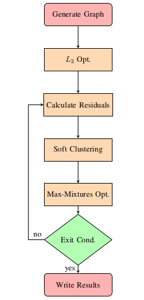
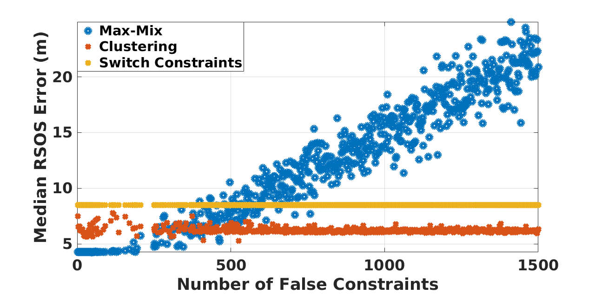

Experience
-
The Air Force Research Lab
Summer Internship
06/2017 - 08/2017
The purpose of this internship was to explore the capability of back-end factor graph optimization techniques to handle major errors in input data. This could handle sporadic, uncorrelated inputs (like outlier measurements from a vision-based localization system) or systematic, highly time-correlated errors such as GPS spoofing in an area.
 Over the course of this internship, we developed the methodology presented in the figure on the left. From the figure, it can be seen that the initialization of the algorithm is compose of two sections. The first step is the construction of the pose graph using the given the initial state estimate and the set of constraints. This can easily be done through the utilization of one of the commonly used software libraries (i.e., Georgia Tech Smoothing And Mapping (GTSAM) or general graph optimization (G2O)). The second step is an initial iteration of L2 optimization is conducted. Using the residuals from the initial iteration of optimization, the collapsed Gibb’s sampling clustering algorithm is used to estimate a mixture model to characterize the true measurement covariance. With the estimated mixture model that characterizes the current iterations residuals, the max-mixtures frame-work is used in conjunction.
To validate the proposed robust pose graph optimization technique, the Manhattan 3500 data set is utilized. This synthetic data set is composed of 3500 pose estimates and 5598 relative constraints. As an initial test, the original data set is corrupted by randomly adding erroneous range constraints. For this evaluation, up to 1500 false constraints (i.e., over 20% of the total constraints) are added to the original pose graph.
 Utilizing the corrupted data-sets, the proposed method is compared to two existing, state-of-the-art methods --- switchable constraints and max-mixtures. To quantify the accuracy of the optimizer, the median of the residual sum of squares (RSOS) of the X − Y positioning error is reported, in the figure provided below. From the figure below, it can be seen that the max-mixtures approach, with a pre-defined mixture model, performs considerable worse than the switchable constraint and clustering technique as the number of erroneous constraints increases. Additionally, it should be noted that both switchable constraints and the clustering technique stay relatively constant, with respect to the median RSOS error, as the number of false constraints is increased; however, the clustering optimization technique provides a smaller bias.
-
NASA JPL
Visiting Summer Researcher
06/2016 - 08/2016
The work conducted during this position directly ties in with the research I did for my Master's thesis. That is, the development, and integration of inertial navigation into NASA JPL's Precise Point Positioning (PPP) software, RTGx. Specifically for this internship, I worked on an easy to use Python wrapper for their real-time state estimation software. Additionally, over the course of the summer, I co-authored a paper detailing the inertial navigation algorithm utilized in NASA JPL's RTGx. The abstract of the paper is provided below. Additionally, a link is provided to the full text.
Abstract: We present an analysis of the positioning performance of tightly-coupled Precise Point Positioning inertial navigation using two long-baseline flight data sets that include data from a navigation-grade Inertial Measurement Unit. The benefits of integrating inertial navigation with Precise Point Positioning are evaluated when using various GPS orbit and clock products (i.e., broadcast, real-time, and final), and whenever different troposphere models are adopted. We show that the positioning performance of PPP/INS, when using orbit and clock products generated in real-time is at the same level of accuracy as PPP when using post-processed orbit and clock products. In addition, we show that significant benefits with respect to solution convergence are available with tight-INS, leading to a greater than 30% reduction in three-dimensional (3D) Root Mean Squared (RMS) positioning errors. For example, when using real-time orbit and clock products with tightly-coupled inertial navigation, the mean and standard deviation of the position errors with respect to ambiguity-fixed post-processed reference solutions are reduced from 19 cm and 28 cm, to 15 and 18 cm, respectively. Furthermore, when using inertial data, a 10 cm or greater reduction in the 3D RMS position error is shown to be independent of the quality of the a priori nominal troposphere and troposphere modeling approach adopted. Index Terms—Precise Point Positioning, Inertial Navigation, Tightly-Coupled Navigation, Real-Time PPP, Airborne Geodesy Precise Point Positioning, Inertial Navigation, Tightly-Coupled Navigation, Real-Time PPP, Airborne Geodesy.
Read Me